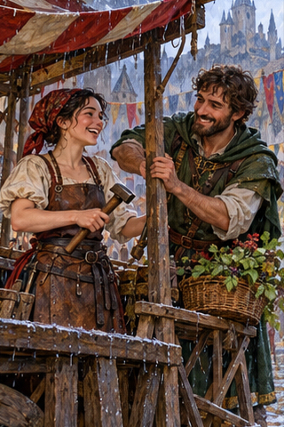
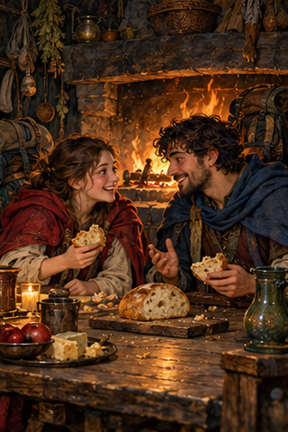
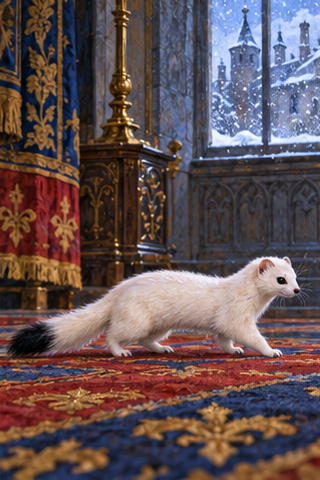
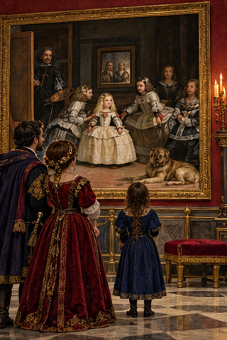
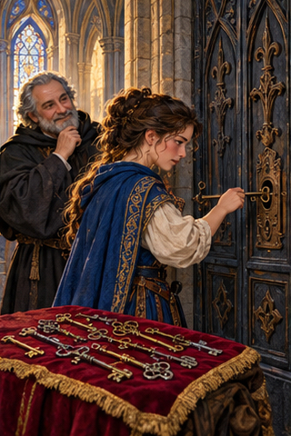
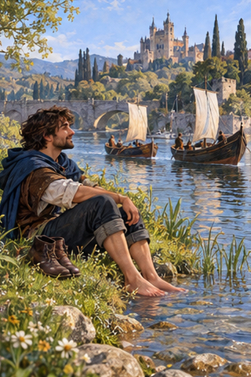
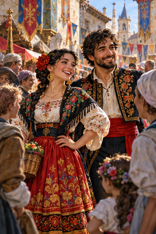

PDD Batch 28 — review only
Ten 320×480 portraits, in manifest order. Not installed.
Original composite1. PDD 297 — quemarse las pestanas
pdd297.jpg
2. PDD 298 — llevarse a las mil maravillas
pdd298.jpg
3. PDD 299 — hacer buenas migas
pdd299.jpg4. PDD 300 — curiosidad insaciable
pdd300.jpg
5. PDD 301 — armiño
pdd301.jpg
6. PDD 302 — Las Meninas
pdd302.jpg
7. PDD 303 — persistencia
pdd303.jpg
8. PDD 304 — orilla
pdd304.jpg
9. PDD 305 — maja/majo
pdd305.jpg10. PDD 306 — Hablar incluso cuando no hay respuesta
pdd306.jpg